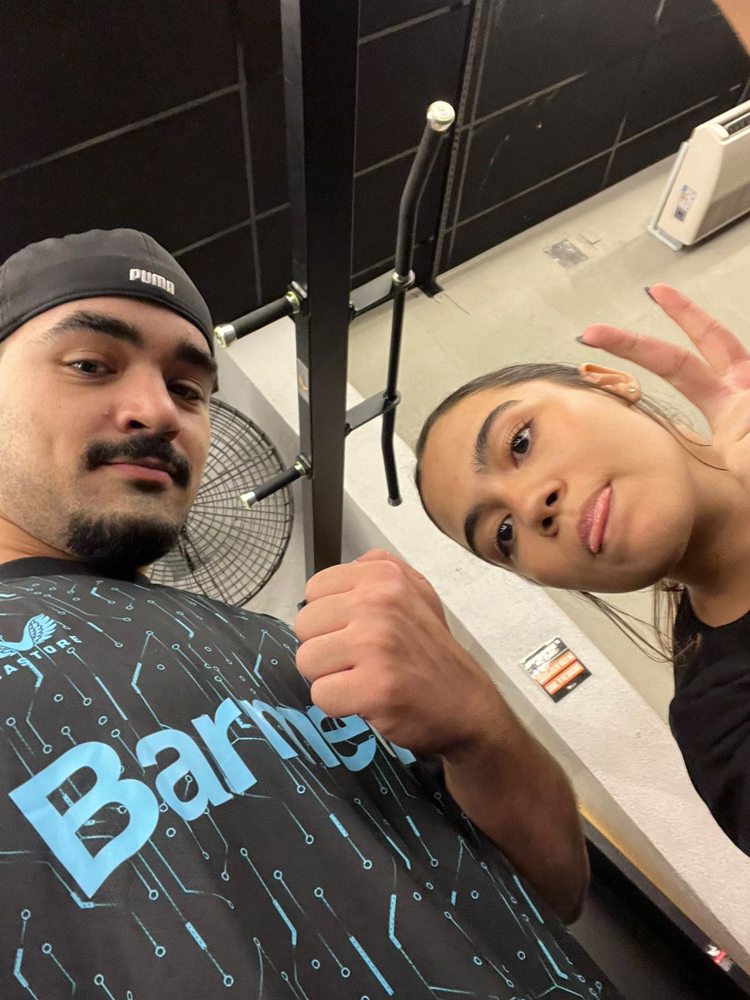
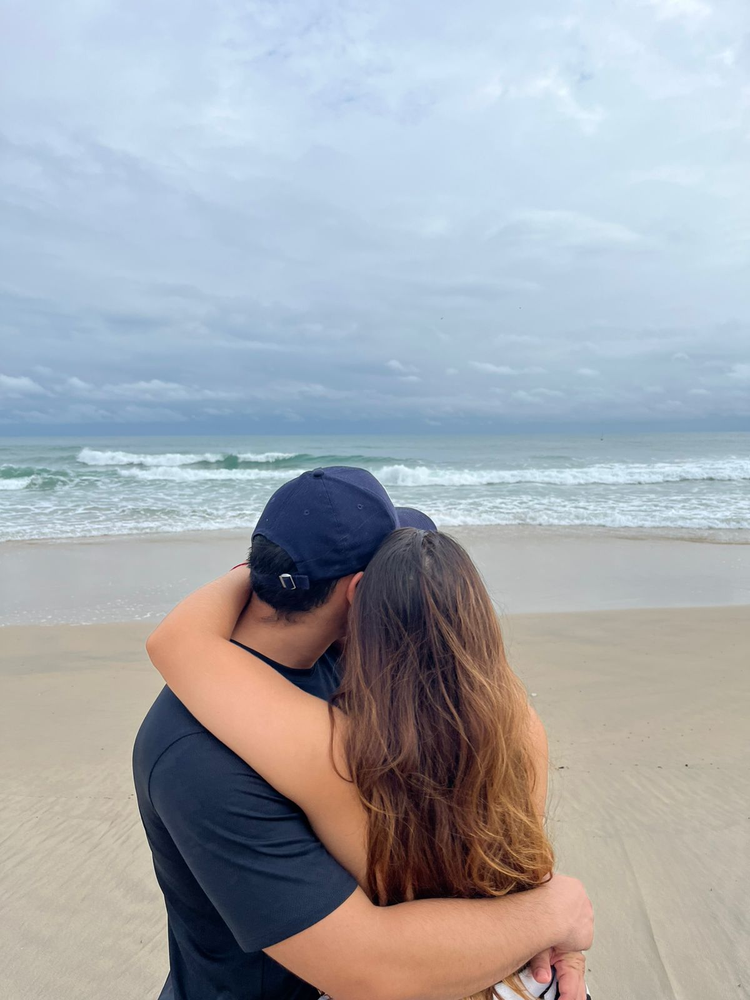
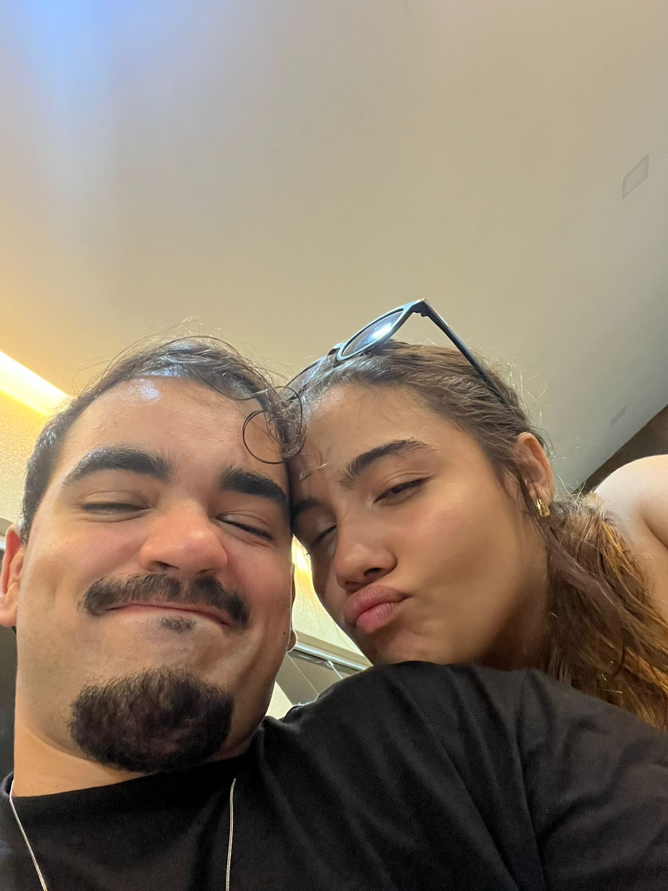

Mensagem para a princesa
Eita princesa, já são dois meses né, quem imaginaria que esse nosso relacionamento iria
virar um namoro, mas eu tenho certeza que isso foi uma das melhores escolhas que eu fiz na vida
você princesa é uma pessoa que assim, é um achado, uma pessoa que é parecida comigo, que assusta bastante kkkkk,
me faz sentir uma das pessoas mais sortudas do mundo por ter você ao meu lado, você ajuda sua família,
o fato de você sempre correr atrás das suas coisas, não esperar ninguém para fazer tal coisa, você sempre toma as suas iniciativas.
Amor, você é FODA eu te admiro horrores, sim, sou babão mesmo, sou seu fã número 1, pois você é uma pessoa incrível, agora irei falar
um pouco sobre o que eu sinto por você.
Princesa, sua presença faz eu esquecer de TUDO cara você não sabe o quão bem você faz pra mim, eu conto os dias para te ver eu faço de TUDO
pra conversar com você por ligação, nem que seja só um pouquinho, mas só de ouvir um boa noite seu já facilita a minha pessoa de pegar no sono
e com você meu amor que eu não preciso ter medo de quem eu sou, gosto de você grudadinha comigo, gosto de você fazendo cafûne em mim,
tu não tem ideia do quão importante você é para mim, por isso que as vezes eu faço até o impossível só para te ver e sempre estarei aqui para te apoiar
ajudar, minha rotina NUNCA será mais importante que você, caso você precise de ajuda em alguma coisa, eu vou ir te ajudar, só não no horário de trabalho por motivos obvios né,
mas eu sempre estarei disposta a faltar um treino, deixar de ir para algum lugar, só para ir te ajudar e você sempre terá todo o meu apoio, sempre que precisar eu irei estar aqui para te apoiar em TUDO
acho que escrevi demais né kkkkkk, mas é isso amor, te amo muito muito muito muitão, esse texto não representa nem 1% do que eu sinto por você, é isso.
assinado, Bobão